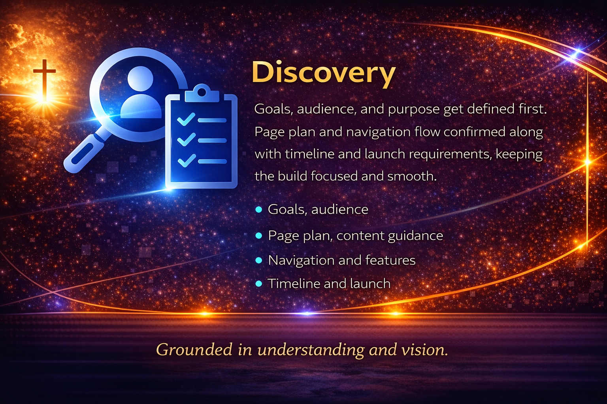
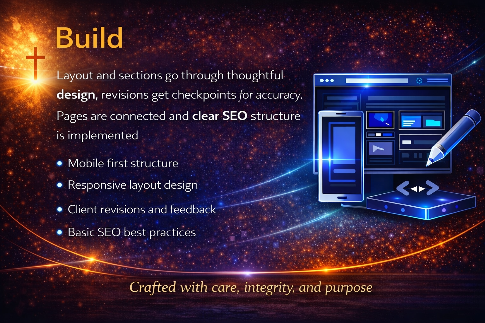

A Process Built for Clarity and Confidence
Building a website should not feel confusing or overwhelming. A clear process brings direction, removes uncertainty, and ensures every step is handled with purpose.
Each stage is designed to guide you forward with confidence so your vision becomes something structured, clear, and effective.

Discovery and Direction
Every project begins with understanding your vision, your goals, and what success looks like. This step creates a strong foundation so nothing feels rushed or unclear.
Website preview before launch
Preview Before Launch
Before your website goes live, you will experience a working version on mobile and desktop. This allows you to see how everything flows, feels, and functions in real time.

Structure, Design, and Build
Your website is organized and designed with intention. Every section is built to be clear, professional, and aligned with your goals.
Launch and Ongoing Support
Once everything is complete, your website goes live with confidence. Continued support ensures you are not left on your own after launch.
Ready to Start with a Clear Process
You deserve a process that feels structured, supportive, and focused. Let’s build something that works for you from start to finish.
Start Your Project